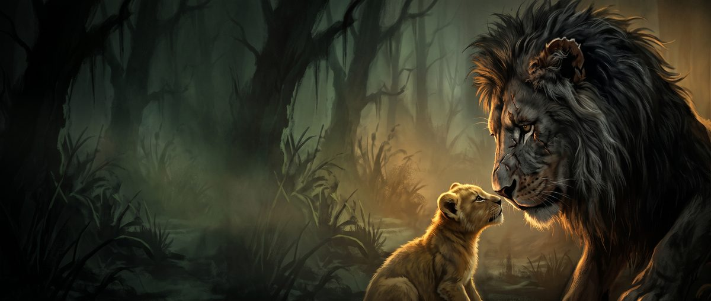

Terror de investigación en primera persona
Recorre el pueblo con tu linterna, examina objetos y anota todo en tu libreta. Cada pista te acerca a la verdad… y al león.

Terror · Investigación · Primera persona
Lo que esconde el león
Todos culpan al león.
Tú decides a qué creerle.
Beta gratuita para PC con Windows · Corre en laptops humildes
La historia
Hace años que la gente abandonó el pueblo por miedo. Dicen que de noche baja un león, que nadie lo ve venir, que no deja nada.
Ahora una chica apareció muerta, y nadie duda de quién fue. Tú llegas para ver con tus propios ojos. Casas vacías, puertas que golpean con el viento, huellas en el barro… y cosas que no encajan con lo que todos repiten.
Nada es lo que parece.
No hay menús de decisiones ni un camino correcto. Lo que encuentres, y el orden en que lo encuentres, cambia lo que piensas. Al final, el juego te muestra lo que tú creíste.
El juego
Recorre el pueblo con tu linterna, examina objetos y anota todo en tu libreta. Cada pista te acerca a la verdad… y al león.
Métete en un armario o debajo de la cama y tápate la boca. Si respiras fuerte, te oye. Si aguantas demasiado, te ahogas. Y cuando se vaya, sal rápido.
Escucha tus pasos, ve tu linterna y sigue tu rastro. Tumba puertas. Si te alcanza, forcejea o no la cuentas. Tienes un rifle viejo y casi nada de balas.
Nadie te dice qué pensar. El orden en que descubres las cosas cambia lo que crees, y lo que crees decide el final.
Uno crea la partida y pasa un código; el otro se une desde su PC. El león caza a los dos, y las pistas se comparten.
Hecho y probado en una laptop con gráfica integrada. Gráficos cuidados que no piden una PC gamer: baja la calidad con G y listo.
Descargar
Gratis. Sin cuentas, sin tiendas. Descarga, abre y entra al pueblo.
THE LION se juega en una PC con teclado y mouse. Guarda esta página y descárgalo desde tu computadora.
Windows 10/11 de 64 bits. Descarga TheLion.exe y ábrelo, sin instalar nada. Si Windows muestra un aviso azul (SmartScreen): Más información → Ejecutar de todas formas.
Lo mismo, comprimido. Úsalo si tu navegador o antivirus bloquea la descarga del .exe: descomprime y abre TheLion.exe.
Es una beta: puede haber errores. Cada actualización sale aquí con sus notas en el devlog.
Devlog
Cargando novedades…
Requisitos